<!DOCTYPE html>


<html lang="zh-CN">


<head>
  <meta name="baidu-site-verification" content="codeva-NSg7ynviLa" />
  <meta charset="utf-8" />
    
  <meta name="viewport" content="width=device-width, initial-scale=1, maximum-scale=1" />
  <title>
    Tree Based Methods |  
  </title>
  <meta name="generator" content="hexo-theme-ayer">
  
  <link rel="shortcut icon" href="/images/mojie.jpg" />
  
  
<link rel="stylesheet" href="/dist/main.css">

  <link rel="stylesheet" href="https://cdn.jsdelivr.net/gh/Shen-Yu/cdn/css/remixicon.min.css">
  
<link rel="stylesheet" href="/css/custom.css">

  
  <script src="https://cdn.jsdelivr.net/npm/pace-js@1.0.2/pace.min.js"></script>
  
  

  

<link rel="alternate" href="/atom.xml" title="null" type="application/atom+xml">
</head>

</html>

<body>
  <div id="app">
    
      
    <main class="content on">
      <section class="outer">
  <article
  id="post-Tree-Based-Methods"
  class="article article-type-post"
  itemscope
  itemprop="blogPost"
  data-scroll-reveal
>
  <div class="article-inner">
    
    <header class="article-header">
       
<h1 class="article-title sea-center" style="border-left:0" itemprop="name">
  Tree Based Methods
</h1>
 

    </header>
     
    <div class="article-meta">
      <a href="/posts/7532e592/" class="article-date">
  <time datetime="2021-06-22T02:01:07.000Z" itemprop="datePublished">2021-06-22</time>
</a> 
  <div class="article-category">
    <a class="article-category-link" href="/categories/%E7%90%86%E8%AE%BA%E5%AD%A6%E4%B9%A0/">理论学习</a> / <a class="article-category-link" href="/categories/%E7%90%86%E8%AE%BA%E5%AD%A6%E4%B9%A0/%E7%BA%BF%E6%80%A7%E6%A8%A1%E5%9E%8B/">线性模型</a>
  </div>
  
<div class="word_count">
    <span class="post-time">
        <span class="post-meta-item-icon">
            <i class="ri-quill-pen-line"></i>
            <span class="post-meta-item-text"> 字数统计:</span>
            <span class="post-count">5.1k</span>
        </span>
    </span>

    <span class="post-time">
        &nbsp; | &nbsp;
        <span class="post-meta-item-icon">
            <i class="ri-book-open-line"></i>
            <span class="post-meta-item-text"> 阅读时长≈</span>
            <span class="post-count">18 分钟</span>
        </span>
    </span>
</div>
 
    </div>
      
    <div class="tocbot"></div>


  
    <div class="article-entry" itemprop="articleBody">
       
  <link rel="stylesheet" type="text/css" href="https://cdn.jsdelivr.net/hint.css/2.4.1/hint.min.css"><p>ISL 真是好书！</p>
<span id="more"></span> 
<h1>资料</h1>
<p><a target="_blank" rel="noopener" href="https://www.statlearning.com/">An Introduction to Statistical Learning</a>，下文简称 <strong>ISL</strong></p>
<h1>概述</h1>
<p>决策树的方法对于 <em>interpretation</em> 很有用，但是它们在预测准确性上效果不是特别好。</p>
<p>决策树可以同时用于回归变量与分类变量的问题。我们先考虑回归问题，</p>
<h2 id="Regression-Trees">Regression Trees</h2>
<h3 id="Predicting-Baseball-Players’Salaries-Using-Regression-Trees">Predicting Baseball Players’Salaries Using Regression Trees</h3>
<p>我们先看一个简单的例子，我们通过回归树来预测足球运动员的收入，这里的特征是 Year (踢球的年限) 和 Hits (上一年度射中球门的数目) 。 我们先移除收入缺失的行，然后对 <em>Salary</em> 变量进行 log 转换（底为 e），使得它的分布更类似于正态分布。</p>
<p>下图表示了一个回归树的结果，它从树的根部出发。第一个分支条件使 Year &lt; 4.5 ，满足这个条件分到了左枝，这里的 5.11 是所有满足 Year &lt; 4.5 的运动员的薪资均值。以此类推。</p>
<p>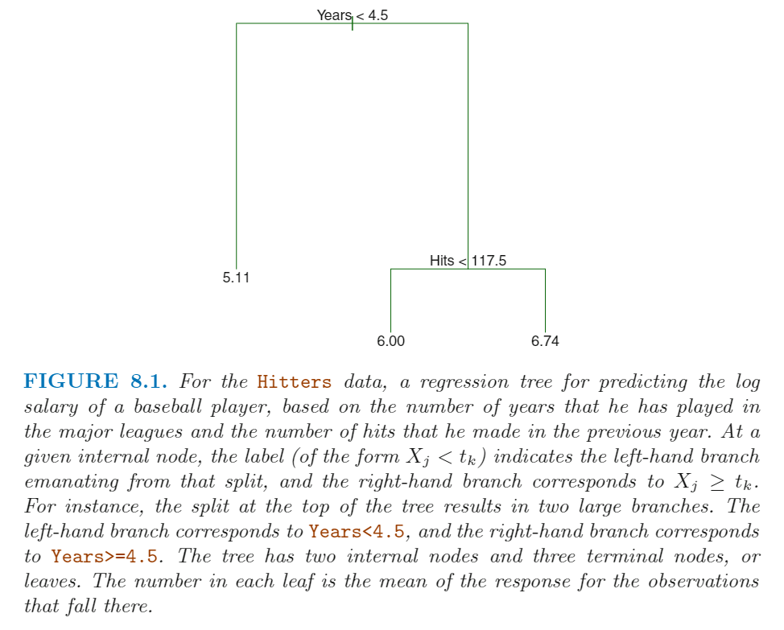</p>
<p>这里最终是把所有的运动员分成了3个子群体，如下图所示：</p>
<p>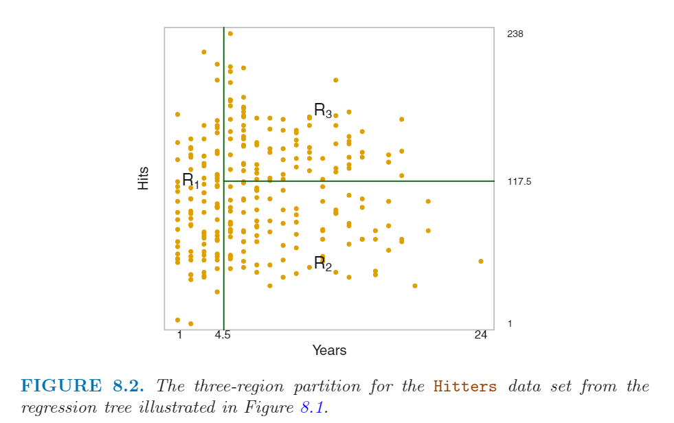</p>
<p>我们如果用决策树的术语，这里的三个子区域 R<sub>1</sub> , R<sub>2</sub> , R<sub>3</sub> 称为 <em>terminal nodes</em> 或 <em>terminal leaves</em> 。 自变量空间被划分的那个节点称为 <em>internal nodes</em> 。在图 8.1 中，总共有2个  <em>internal nodes</em> ，Years &lt; 4.5 和 Hits &lt; 117.5 。我们把决策树上连接  <em>internal nodes</em> 的片段称为 <em>branches</em> 。</p>
<p>我们一般会这么解释图 8.1 的回归树：Years 是最重要的区分 Salary 性状的因子，年限短的运动员挣的钱少，年限长的运动员挣的钱多；如果一个远动员年限短，那么他上一年进球数对他的薪资几乎没有影响。但是如果一个运动员年限长（&gt;4.5年），那么他上一年进球数会对他的薪资造成影响，上一年进球数越多薪资越高。</p>
<p>这种回归树的图是对 Hits ,Years, Salary 三者之间关系的简化，但是它对于其他回归模型有优势，因为它容易解释，而且有可视化效果。</p>
<h3 id="Prediction-via-Stratification-of-the-Feature-Space">Prediction via Stratification of the Feature Space</h3>
<p>我们现在讨论一下构建一个回归树的过程。简单地讲，总共有两步：</p>
<ol>
<li>我们首先切分 <em>predictor space</em> — 将所有可能的值 X<sub>1</sub> , X<sub>2</sub> ，…… , X<sub>p</sub> 分成 J 个互不重叠的区域， R<sub>1</sub>,  R<sub>2</sub> , ……，R<sub>J</sub> 。</li>
<li>对于落在同一区域的观测值，我们会做相同的预测，即这个区域内所有观测值的<strong>均值</strong>。</li>
</ol>
<p>我们先看第一步，我们要如何去划分区域呢？一般我们会将各个区域划分成高维矩形，或者称为 <em>boxes</em> ，这样解释结果更简单。我们划分的目标是，找到一组 <em>boxes</em> R<sub>1</sub>,  R<sub>2</sub> , ……，R<sub>J</sub> ，使得 RSS 最小，RSS 计算见下式</p>
<p style=""></p><p>下式为 R<sub>j</sub>  中所有观测值的均值。</p>
<p style=""></p><p>但是，我们不可能穷尽所有的划分方式，找到这个最佳的划分方法。因此我们采取一种称为 <em>recursive binary splitting</em> 的方法。这是一种 <em>top-down</em> 并且是 <em>greedy</em> 的方法，<em>top-down</em> 指从决策树的一开始的节点一直向下切分，每次生成两条新枝；<em>greedy</em> 指在每一步的切分中，所谓的最好的切分方式的决策都仅针对当前这一步，它不会往前看，面向未来，找会使得将来几步最好的切分。</p>
<p><em>recursive binary splitting</em>  方法的第一步，是选取一个特征 X<sub>j</sub> 和相应的一个断点 s ，然后将个预测因子空间切分为两部分，<strong>从而使得 RSS 减少得最多</strong>。两个子空间如下：</p>
<p style=""></p><p>这就要求需要考虑所有得预测因子  X<sub>1</sub> , X<sub>2</sub> ，…… , X<sub>p</sub>  ，以及每个预测因子上所有可能的断点，然后挑 RSS 最低的组合。RSS 计算方式如下：</p>
<p style=""></p><p>之后我们会重复这一步，，但是这次就不是对整个预测因子空间进行切分，而是对上面的两个子空间的一个进行切分，然后我们就有了3个区域。之后我们会再找一个子空间进行切分，这个过程会一直持续，以至于满足了一个停止条件，例如直到所有区域包含不超过 5 个观测值。</p>
<p>一旦我们创建好了所有子区域，我们就可以通过计算子区域内所有观测值的均值，作为这个子区域的预测值。下图为一个 5个子区域划分的例子。</p>
<p>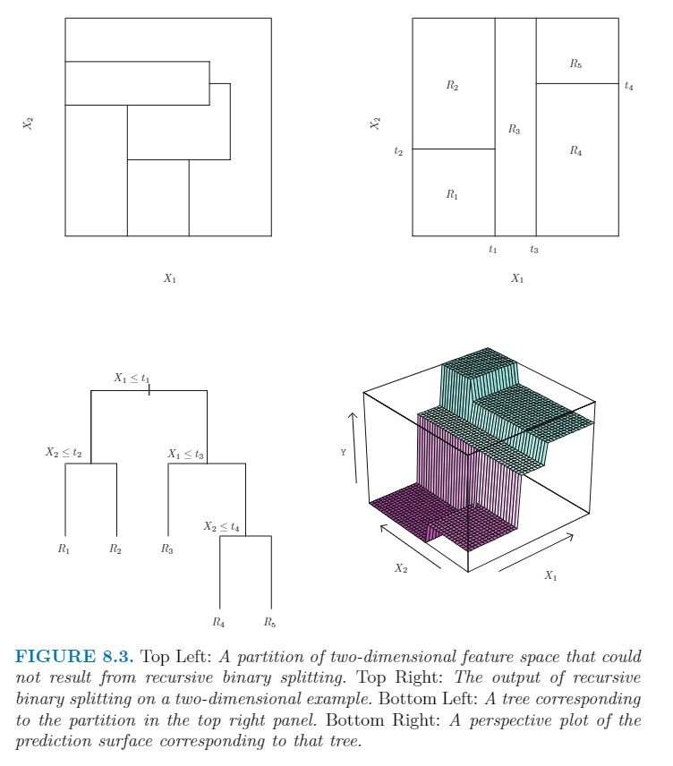</p>
<h3 id="Tree-Pruning">Tree Pruning</h3>
<p>上面的划分过程可能会造成 <em>overfitting</em> ，因为划分得到的决策树过于复杂了。一个简单一些的决策树的 variance 更低，解释效果更好，但是 bias 会略有增加。<strong>一个可能的解决办法是每次切分过程 RSS 降低量必须超过某个阈值</strong>。但是这个策略的问题是短视，因为一个看上去没有意义的切分可能会带来后面的一个很好的切分，即在它后面的一个切分可能RSS降低很多。</p>
<p>因此，一个更好的策略是先生成一个非常大的决策树 T<sub>0</sub> ，然后进行删减得到一个 <em>subtree</em> 。我们如何进行删减分支呢？从目标上，我们的目的是选择一个 <em>test error rate</em> 最低的 <em>subtree</em> 。如果给定一个 <em>subtree</em>， 我们可以通过交叉验证来验证 <em>test error</em> 。但是，对于每一个可能的 <em>subtree</em> 如果都进行交叉验证，计算量就太大了。因此，我们需要一种方式事先挑出少数的一些 <em>subtree</em> 备选。</p>
<p>我们可以通过 <em>Cost complexity pruning</em> 或者称为 <em>weakest link pruning</em> 方法来实现这一点。我们通过指定参数 α 来挑出一部分 <em>trees</em> 。</p>
<p>对于每个给定的 α  值，都存在一个 <em>subtree</em> T ⊂T<sub>0</sub> ，使得下式尽可能小。</p>
<p>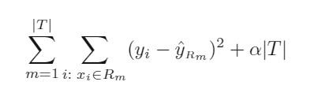</p>
<p>这里的 |T| 表示 决策树 T 的 <em>terminal leaf</em> 的数量 , R<sub>m</sub> 是相应于第 m 个  <em>terminal leaf</em>  的子空间。这里就是增加了一个惩罚项，越复杂的 <em>subtree</em> 惩罚越严重，通过调控 α 来控制调控比例。我们可以先通过交叉验证得到一个合适的 α 值，然后根据这个 α 值得到相应的最佳的 <em>subtree</em> 。 这个流程如下图：</p>
<p>首先对所有训练集的个体先得到 T<sub>0</sub> 和 <em>best subtree</em>  与 α 的函数。</p>
<p>然后进行交叉验证结果选择最好的 α 值，最后根据 α 值返回第二步找到相应的 <em>best subtree</em> 。</p>
<p>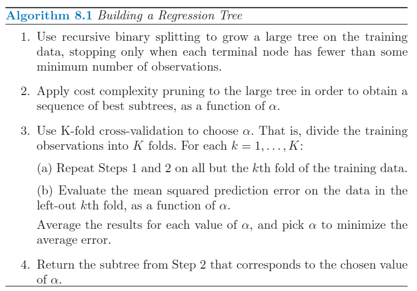</p>
<p>效果如下图，我们可以看到交叉验证结果很好地估计了 Test data error ，交叉验证最佳的  <em>terminal leaf</em>  的数目为3， 使用 test data 的结果的最佳数目为9，但是在<em>terminal leaf</em> 为3的地方有一个明显的下降。</p>
<p>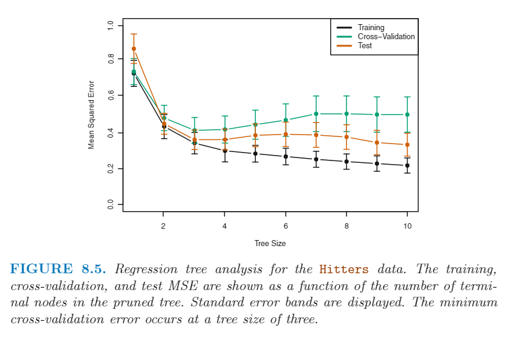</p>
<h2 id="Classification-Trees">Classification Trees</h2>
<p><em>classification trees</em> 和上面的 <em>regression trees</em> 很相似，仅仅是用于预测分类变量，将每个子空间的预测值改为出现概率最大的那个水平。</p>
<p>创建一个分类树的过程和创建回归树的过程类似。我们先用 <em>recursive binary splitting</em> 方法来创建一个分类树，但是这里不能再用 RSS 作为指标了，一般用 <em>classification error rate</em> ，即观测值和预测值（子空间中最大可能的水平）不一致的比例，公式如下：</p>
<p style=""></p><p>下式为 训练集第m个子空间中属于k 水平的比例。</p>
<p style=""></p><p>这里，E 就是这个子空间内所有观测值中不是最大可能观测值的比例。但是实际证明这个指标在划分决策树时不够敏感，因为实际我们一般会用另外两个指标。</p>
<p>第一个就是 <em>Gini index</em>,  定义为如下式，可以视为 K 个水平的总方差的衡量公式。只看查看这个式子我们不难发现，如果 p<sup>^</sup> <sub>mk</sub>  越接近于0或1，那么这个式子就越小，因此这个式子也可以视为 <em>node purity</em> 的衡量指标 - 值越小说明这个子空间的预测值越纯。</p>
<p style=""></p><p>另外一个指标就是 <em>entropy</em> ， 计算方法如下：</p>
<p style=""></p><p>同样地， 当  p<sup>^</sup> <sub>mk</sub>  越接近于0或1，那么这个式子就越小。实际证明这两个式子效果差不多。</p>
<p>因此创建分类树时，我们一般会用  <em>Gini index</em> 或  <em>entropy</em> 作为划分新枝的衡量标准。当我们在 <em>pruning</em> 分枝时，我们可能会不用这两个指标，而是用一开始的 <em>classfication error rate</em> ，因为最终我们的目标还是预测准确性。</p>
<p>在创建新枝的过程中，属于分类变量的特征也可以用于划分新枝，只用把其中的一些水平划给一个分支，把剩下的所有水平划给另外一个分支即可。下图即为一个分类树结果，比如这里的 Thal:a 就表示左边为 Thal 的第一个水平的观测值，右边为其他水平的观测值。</p>
<p>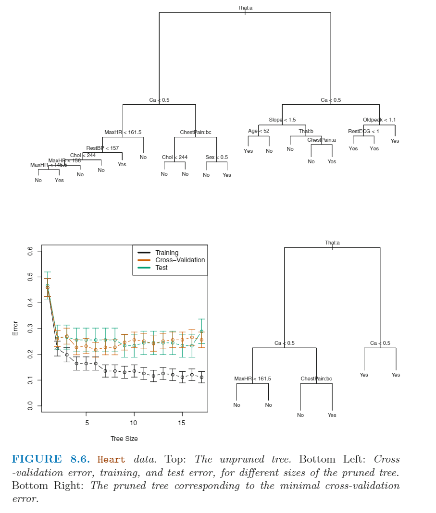</p>
<h2 id="Trees-Versus-Linear-Models">Trees Versus Linear Models</h2>
<p>如果反应变量与特征之间存在明显的线性关系，那么线性回归会很合适。但是，如果反应变量与特征之间存在<strong>非线性的复杂关系</strong>，那么决策树会比那些经典方法更合适。下图就是一个很好的例子，这是一个p=2的分类问题，上方的行表示真实的决策线是线性的，不同的颜色表示不同的水平，这里明显可以看出线性模型效果更好；下方的行中真实决策线是非线性的，这里线性模型的方法无法准确预测，而决策树效果很好。</p>
<p>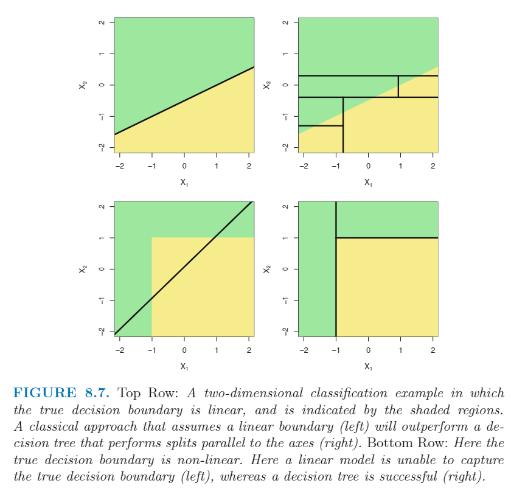</p>
<h2 id="Advantages-and-Disadvantages-of-Trees">Advantages and Disadvantages of Trees</h2>
<p>决策树的优点如下：</p>
<ul>
<li>结果容易解释</li>
<li>更符合人的做决定的方式</li>
<li>可视化，不言自明</li>
<li>可以直接处理分类变量，而不用像线性模型那样转变为哑变量。</li>
</ul>
<p>缺点如下：</p>
<ul>
<li>预测准确性没有经典方法高</li>
<li>有时不够稳健，换句话说，数据稍有改变，可能最终的决策树就有一个大的改变。</li>
</ul>
<p>但是，通过使用 bagging, random forests, and boosting ，我们可以提高决策树的预测准确性。</p>
<h1>Bagging, Random Forests,  Boosting</h1>
<p>这三种方法都是使用决策树作为 <em>blocks</em>，来创建更加强大的预测模型。</p>
<h2 id="Bagging">Bagging</h2>
<p>自助法是一种强大的思路，可以计算很难计算或无法计算的因子估计值的标准误。这里我们同样可以用自助法的思想，来提高决策树的效果。</p>
<p>上面我们讨论过，决策树具有 <em>high variance</em> 的缺点，这表明如果我们随机将训练集拆分成两部分，然后对每一部分拟合决策树，我们可能会得到两个完全不同的结果。<em>Bootstrap aggregation</em>，或称为 <em>bagging</em> 方法是一种通用的降低统计方法方差的流程，它对决策树非常有用。</p>
<p>假设我们有一个 n 个独立的观测值的数据集 Z<sub>1</sub>,……, Z<sub>n</sub> ，观测值的方差为 σ<sup>2</sup> ，那么观测值均值的方差为 σ<sup>2</sup> / n 。也就是所，对多个数据集求均值可以降低方差。因此一个降低方差，提高预测准确性的方法就是<strong>用多个训练集</strong>单独进行模型拟合，最终对所有模型的预测值求均值。比如我们得到了 B 个单独的拟合模型，最终模型的预测值如下：</p>
<p style=""></p><p>但是，这在实际中并不可行，因为我们不可能得到很多个训练集。因此，我们可以使用自助法作为替代方法，从一个训练集中有返回地重复抽样，最终生成B个不同的自助法的训练集。代入上式，得到最终的统计模型。这种方法称为 <em>bagging</em>。</p>
<p><em>Bagging</em> 方法可以显著提高很多回归方法的预测效果，它同样对于决策树也很有用。我们可以用这 B 个自助法训练集来创建 B 个决策树，这些决策树是最深的，没有进行删减。因此这些决策树偏差很小，方差很高。我们通过对这 B 个决策树进行求均值，可以降低方差。</p>
<p>对于反应变量是质量性状的情况，我们可以对这B个决策树的预测结果取 <em>majority vote</em> （占比最高的水平）。</p>
<p>下图中的横坐标为自助法抽样次数，纵坐标为 test error ，这里的黑线就是自助法的结果，黑色虚线是原始结果，我们可以看到自助法没有随着抽样次数的增加出现 <em>overfitting</em> 的问题。实际上，这里 B = 100 就已经够用了。</p>
<p>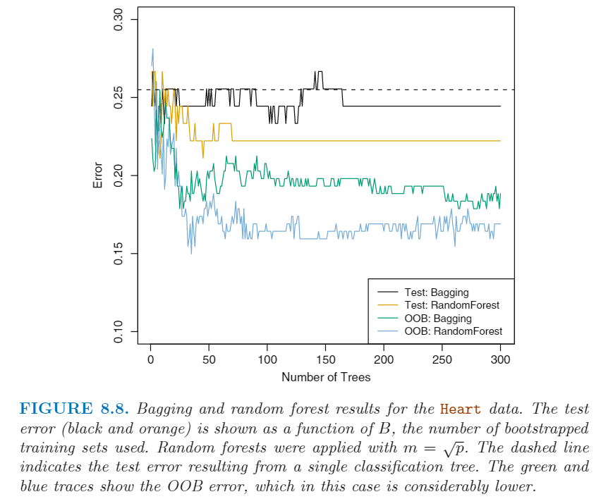</p>
<h3 id="自助法究竟是如何用到决策树上？">自助法究竟是如何用到决策树上？</h3>
<p>自助法的思路用到线性回归上，这个流程很容易理解，就是把 B 次估计的系数求均值，就得到了最终使用的模型。推导如下：</p>
<p style=""></p><p>但是决策树不是每一次分枝情况都不一样吗？这个最终的模型到底是如何构建的呢？没有说清楚。</p>
<h3 id="Out-of-Bag-Error-Estimation">Out-of-Bag Error Estimation</h3>
<p><em>Bagging</em> 方法有一个直接的估计 test error 的方式，不需要使用交叉验证或者验证集方法。 每个自助集的决策树平均只用了 2/3 的观测值。剩下的没有用到的 1/3 的观测值称为 <em>out-of-bag</em> (OOB) observations。我们可以用当这个观测值为OOB的决策树来预测这个观测值的结果，因此针对某个观测值，我们可以得到差不多 B/3 个预测值。为了获得一个单独的预测值，我们可以对这接近B/3 个预测值求均值，这样每一个观测值都可以得到一个 OOB 预测值，然后我们就可以计算 OOB MSE (反应变量为连续变量) 或者 claffication error (反应变量为分类变量)。实际证明，OOB error 是一个有效地估计 test error 的统计量。如果 K 足够大，那么OOB error 其实就接近于 LOOCV error 。</p>
<h3 id="Variable-Importance-Measures">Variable Importance Measures</h3>
<p>bagging 方法可以增加预测准确性，但是缺点在于<strong>最终的统计模型难以解释</strong>。然而决策树的优势就在于可视化和易于解释。但是 bagging 的结果最终无法显示为一个决策树的可视化结果，也无法显示哪些特征很重要，哪些特征无关紧要。因此，<strong>bagging 方法提高了预测准确性，其代价就是降低了模型解释性</strong>。</p>
<p>但是我们可以通过 RSS 或 Gini index 来或者所有特征的重要性。例如针对一个 bagging regression trees，我们可以获取所有B个决策树中因为基于某个特征的切分造成的 RSS 的下降值，并求均值。如果这个值很大，说明这个特征很重要。下图为特征重要性的可视化，我们把最重要的特征视为100%，然后其他特征与最重要的特征进行比较。</p>
<p>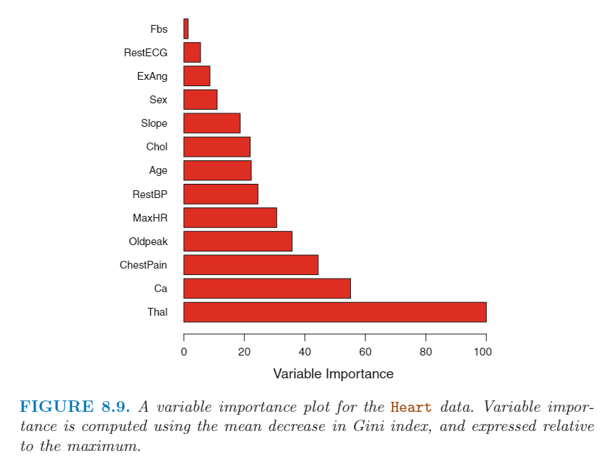</p>
<h2 id="Random-Forests">Random Forests</h2>
<p>随机森林对于 bagging 方法做了一些调整，实现了 <em>decorrelates the trees</em> （降低多次抽样的决策树之间的相关性）。就像 bagging 方法，随机森林方法同样会用自助法的思想，创建出多个训练集，然后拟合多个决策树。仅仅是在拟合决策树的过程中，随机森林方法不再使用所有 p 个特征，而是随机抽样挑选 m 个特征用于拟合决策树。一般来说，m 一般设定为约等于  √p 。</p>
<p>举个例子，加入在数据集中有一个效果非常强的特征，其他特征只有中等效果。因此，在 bagging 方法创建的众多决策树中，大部分或所有的决策树都会用这个最重要的特征作为第一次切分的特征。因此，所有的决策树看上去都很像。不幸地是，<strong>对高度相关的连续变量求均值无法起到大幅度降低方差的作用</strong>。因此，这到这 bagging 方法降低方差的作用可能不是很大。</p>
<p>随机森林方法通过每次都只用一小部分特征来构建决策树克服了这个问题，例如这个例子中，我们大概有 (p-m)/p  的比例的决策树中没有这个最重要的特征，因此其他的特征可以有机会体现作用。我们可以认为这个过程降低了决策树之间的相关，因此对这些决策树求均值的方差更低，结果更可靠。</p>
<p>因此，bagging 和 随机森林的最大区别在于如何选择 m 的大下。如果随机森林选择 m = p，那么这时就是 bagging 方法。上图8.8中显示，随机森林方法相较于bagging方法，test error 和 OOB error 均更低，说明随机森林方法更佳。</p>
<p>当我们有<strong>数目很多的</strong>并且<strong>彼此存在相关的</strong>特征时，随机森林方法提升效果更好。这里举个例子，假如我们有 349个个体的 4718 个基因的表达量。在这个数据集中，反应变量是一个15个水平的分类变量：要么是正常，要么就是 1-14 种不同类型的癌症。我们随机将数据分为训练集和验证集，然后挑出训练集中方差最大的 500 个基因，我们的目的是用随机森林的方法使用这500个基因预测个体的癌症类型，其中我们采用了三个不同的 m 值。下图为结果显示，其中一次决策树的 test error rate 是 45.7% 。我们可以看到 m = √p 的效果比 bagging （m=p）效果略好。类似于 bagging，随着 B 的增加，随机森林不会出现 overfit 的情况，因此实际情况中，挑选的B值 只要使得 test error 稳定下来即可。</p>
<p>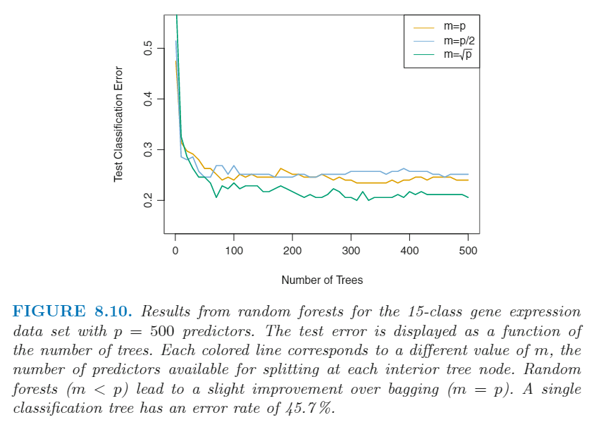</p>
<h2 id="Boosting">Boosting</h2>
<p><em>Boosting</em> 方法类似于 <em>Bagging</em> 方法，是一种可以应用在多种统计学习模型中的一般方法。这里仅讨论 <em>Boosting</em> 方法在决策树上的应用。</p>
<p><em>Boosting</em> 方法也是创建多个决策树，最终综合所有决策树的结果。但是这里不再使用自助法生成训练集，而是<strong>相继</strong>创建训练集：每一个决策树都会用到上一个决策树的数据。</p>
<p>传统的决策树容易 <em>fitting the data hard</em> ，从而造成 <em>overfitting</em> 。但是 <em>Boosting</em> 方法 <em>learns slowly</em> 。除了第一次创建决策树，之后创建决策树的过程都是使用上一步的<strong>残差</strong>。算法过程如下：</p>
<p>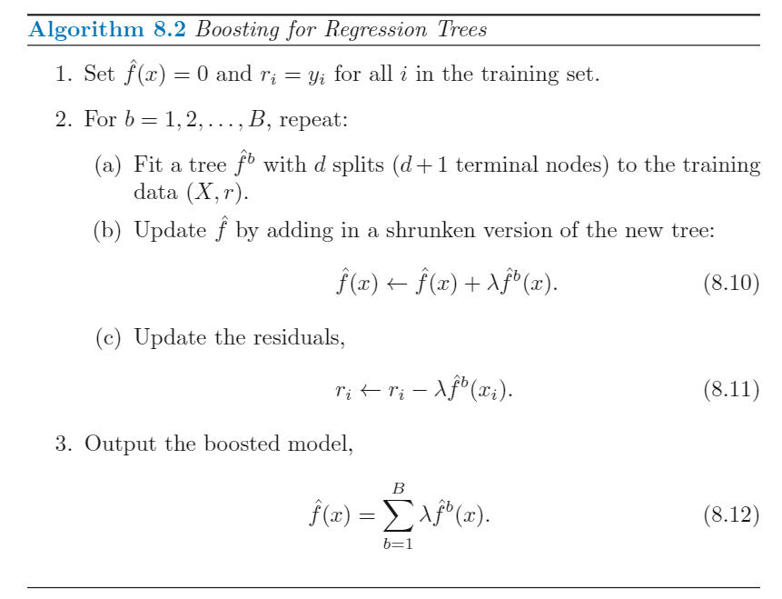</p>
<p>d 决定每一次决策树的 <em>teminal nodes</em> 的数目；λ 参数用于降低学习速度。一般来说，<em>learn slowly</em> 的统计学习模型效果更好。</p>
<p>对于反应变量是分类变量的流程，ISL 没讲。</p>
<p><em>Boosting</em> 方法有3个参数：</p>
<ul>
<li>The number of trees B.  这里不像 bagging 和 random forests 方法，当 B 很大时，boosting 方法可能会出现 <em>overfitting</em> 现象（虽然过拟合增加的效果很缓慢），所以一般会通过交叉验证选择一个合适的 B 值。</li>
<li>The shrinkage parameter λ. 这是一个很小的正数，控制每一步学习的速度。一般会采用 0.01 或 0.001 。 λ 值越小，B 要求越大。</li>
<li>The number d of splits in each tree. 这控制每一步的决策树的复杂度。一般选择 d=1，因此这样每个决策树只有一次切分。最终的模型是可加的，因为每一步的决策树都只包含了一个特征。</li>
</ul>
<p>下图为 15个水平的癌症基因表达量数据集使用 boosting 的效果。我们可以 d=1 的效果比 d=2 和随机森林的效果都好。一般来说，d=1 效果就可以了，唯一问题在于可能需要增加B的数目，但是在对模型的解释性上很好，因为最终的模型是一个加性模型。</p>
<p>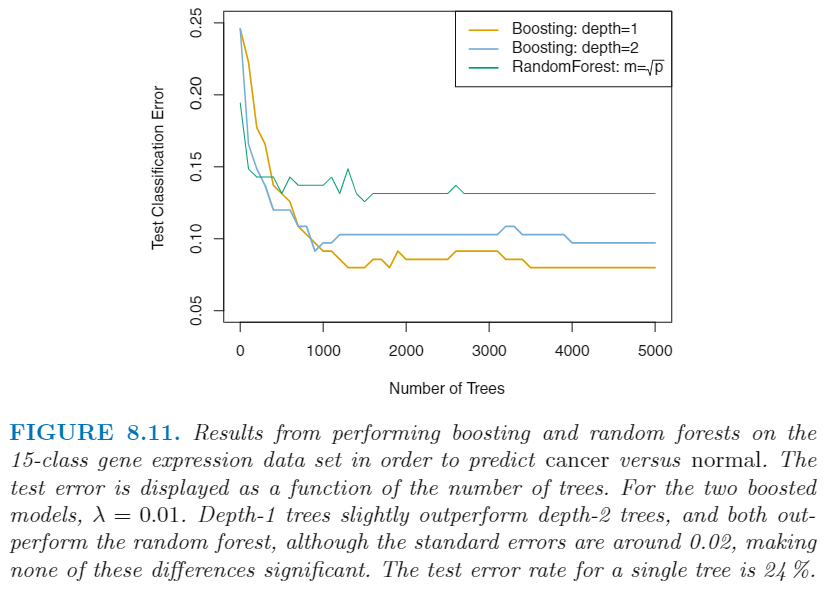</p>
<h1>R 代码</h1>
<p>略</p>
 
      <!-- reward -->
      
      <div id="reword-out">
        <div id="reward-btn">
          打赏
        </div>
      </div>
      
    </div>
    

    <!-- copyright -->
    
    <div class="declare">
      <ul class="post-copyright">
        <li>
          <i class="ri-copyright-line"></i>
          <strong>版权声明： </strong>
          
          本博客所有文章除特别声明外，著作权归作者所有。转载请注明出处！
          
        </li>
      </ul>
    </div>
    
    <footer class="article-footer">
       
  <ul class="article-tag-list" itemprop="keywords"><li class="article-tag-list-item"><a class="article-tag-list-link" href="/tags/%E6%95%B0%E6%8D%AE%E5%88%86%E6%9E%90/" rel="tag">数据分析</a></li><li class="article-tag-list-item"><a class="article-tag-list-link" href="/tags/%E7%90%86%E8%AE%BA%E5%AD%A6%E4%B9%A0/" rel="tag">理论学习</a></li><li class="article-tag-list-item"><a class="article-tag-list-link" href="/tags/%E7%BA%BF%E6%80%A7%E6%A8%A1%E5%9E%8B/" rel="tag">线性模型</a></li></ul>

    </footer>
  </div>

   
  <nav class="article-nav">
    
      <a href="/posts/4de29630/" class="article-nav-link">
        <strong class="article-nav-caption">上一篇</strong>
        <div class="article-nav-title">
          
            Support Vector Machines
          
        </div>
      </a>
    
    
      <a href="/posts/c49e8948/" class="article-nav-link">
        <strong class="article-nav-caption">下一篇</strong>
        <div class="article-nav-title">Generalized Additive Models</div>
      </a>
    
  </nav>

   
<!-- valine评论 -->
<div id="vcomments-box">
  <div id="vcomments"></div>
</div>
<script src="//cdn1.lncld.net/static/js/3.0.4/av-min.js"></script>
<script src="https://cdn.jsdelivr.net/npm/valine@1.4.14/dist/Valine.min.js"></script>
<script>
  new Valine({
    el: "#vcomments",
    app_id: "yHN3kf7fHt5wvleM2DVoHLdY-gzGzoHsz",
    app_key: "RPIwmdftljIzOtAULwc7JCAp",
    path: window.location.pathname,
    avatar: "monsterid",
    placeholder: "靓仔，看完留个评论再走哇！\n只需要填入昵称和邮箱就可以了",
    recordIP: true,
  });
  const infoEle = document.querySelector("#vcomments .info");
  if (infoEle && infoEle.childNodes && infoEle.childNodes.length > 0) {
    infoEle.childNodes.forEach(function (item) {
      item.parentNode.removeChild(item);
    });
  }
</script>
<style>
  #vcomments-box {
    padding: 5px 30px;
  }

  @media screen and (max-width: 800px) {
    #vcomments-box {
      padding: 5px 0px;
    }
  }

  #vcomments-box #vcomments {
    background-color: #fff;
  }

  .v .vlist .vcard .vh {
    padding-right: 20px;
  }

  .v .vlist .vcard {
    padding-left: 10px;
  }
</style>

 
   
     
</article>

</section>
      <footer class="footer">
  <div class="outer">
    <ul>
      <li>
        Copyrights &copy;
        2019-2024
        <i class="ri-heart-fill heart_icon"></i> Vincere Zhou
      </li>
    </ul>
    <ul>
      <li>
        
        
        <span>
  <span><i class="ri-user-3-fill"></i>访问人数:<span id="busuanzi_value_site_uv"></span></s>
  <span class="division">|</span>
  <span><i class="ri-eye-fill"></i>浏览次数:<span id="busuanzi_value_page_pv"></span></span>
</span>
        
      </li>
    </ul>
    <ul>
      
    </ul>
    <ul>
      
    </ul>
    <ul>
      <li>
        <!-- cnzz统计 -->
        
      </li>
    </ul>

    <!-- 与只只在一起天数 -->
	<ul>
		<li><span id="lovetime_span"></span></li>
	</ul>
    <script type="text/javascript">			
        function show_runtime() {
            window.setTimeout("show_runtime()", 1000);
            X = new Date("03/04/2021 22:11:00");
            Y = new Date();
            T = (Y.getTime() - X.getTime());
            M = 24 * 60 * 60 * 1000;
            a = T / M;
            A = Math.floor(a);
            b = (a - A) * 24;
            B = Math.floor(b);
            c = (b - B) * 60;
            C = Math.floor((b - B) * 60);
            D = Math.floor((c - C) * 60);
            lovetime_span.innerHTML = "只只和男朋友在一起了 " + A + "天" + B + "小时" + C + "分" + D + "秒"
        }
        show_runtime();
    </script>

  </div>
</footer>
      <div class="float_btns">
        <div class="totop" id="totop">
  <i class="ri-arrow-up-line"></i>
</div>

      </div>
    </main>
    <aside class="sidebar on">
      <button class="navbar-toggle"></button>
<nav class="navbar">
  
  <div class="logo">
    <a href="/"></a>
  </div>
  
  <ul class="nav nav-main">
    
    <li class="nav-item">
      <a class="nav-item-link" href="/">主页</a>
    </li>
    
    <li class="nav-item">
      <a class="nav-item-link" href="/archives">归档</a>
    </li>
    
    <li class="nav-item">
      <a class="nav-item-link" href="/categories">分类</a>
    </li>
    
    <li class="nav-item">
      <a class="nav-item-link" href="/tags">标签</a>
    </li>
    
    <li class="nav-item">
      <a class="nav-item-link" href="/friends">友链</a>
    </li>
    
    <li class="nav-item">
      <a class="nav-item-link" href="/about">关于</a>
    </li>
    
  </ul>
</nav>
<nav class="navbar navbar-bottom">
  <ul class="nav">
    <li class="nav-item">
      
      <a class="nav-item-link nav-item-search"  title="搜索">
        <i class="ri-search-line"></i>
      </a>
      
      
      <a class="nav-item-link" target="_blank" href="/atom.xml" title="RSS Feed">
        <i class="ri-rss-line"></i>
      </a>
      
    </li>
  </ul>
</nav>
<div class="search-form-wrap">
  <div class="local-search local-search-plugin">
  <input type="search" id="local-search-input" class="local-search-input" placeholder="Search...">
  <div id="local-search-result" class="local-search-result"></div>
</div>
</div>
    </aside>
    <script>
      if (window.matchMedia("(max-width: 768px)").matches) {
        document.querySelector('.content').classList.remove('on');
        document.querySelector('.sidebar').classList.remove('on');
      }
    </script>
    <div id="mask"></div>

<!-- #reward -->
<div id="reward">
  <span class="close"><i class="ri-close-line"></i></span>
  <p class="reward-p"><i class="ri-cup-line"></i>请我喝杯茶吧~</p>
  <div class="reward-box">
    
    <div class="reward-item">
      
      <span class="reward-type">支付宝</span>
    </div>
    
    
    <div class="reward-item">
      
      <span class="reward-type">微信</span>
    </div>
    
  </div>
</div>
    
<script src="/js/jquery-2.0.3.min.js"></script>


<script src="/js/lazyload.min.js"></script>

<!-- Tocbot -->


<script src="/js/tocbot.min.js"></script>

<script>
  tocbot.init({
    tocSelector: '.tocbot',
    contentSelector: '.article-entry',
    headingSelector: 'h1, h2, h3, h4, h5, h6',
    hasInnerContainers: true,
    scrollSmooth: true,
    scrollContainer: 'main',
    positionFixedSelector: '.tocbot',
    positionFixedClass: 'is-position-fixed',
    fixedSidebarOffset: 'auto'
  });
</script>

<script src="https://cdn.jsdelivr.net/npm/jquery-modal@0.9.2/jquery.modal.min.js"></script>
<link rel="stylesheet" href="https://cdn.jsdelivr.net/npm/jquery-modal@0.9.2/jquery.modal.min.css">
<script src="https://cdn.jsdelivr.net/npm/justifiedGallery@3.7.0/dist/js/jquery.justifiedGallery.min.js"></script>

<script src="/dist/main.js"></script>

<!-- ImageViewer -->

<!-- Root element of PhotoSwipe. Must have class pswp. -->
<div class="pswp" tabindex="-1" role="dialog" aria-hidden="true">

    <!-- Background of PhotoSwipe. 
         It's a separate element as animating opacity is faster than rgba(). -->
    <div class="pswp__bg"></div>

    <!-- Slides wrapper with overflow:hidden. -->
    <div class="pswp__scroll-wrap">

        <!-- Container that holds slides. 
            PhotoSwipe keeps only 3 of them in the DOM to save memory.
            Don't modify these 3 pswp__item elements, data is added later on. -->
        <div class="pswp__container">
            <div class="pswp__item"></div>
            <div class="pswp__item"></div>
            <div class="pswp__item"></div>
        </div>

        <!-- Default (PhotoSwipeUI_Default) interface on top of sliding area. Can be changed. -->
        <div class="pswp__ui pswp__ui--hidden">

            <div class="pswp__top-bar">

                <!--  Controls are self-explanatory. Order can be changed. -->

                <div class="pswp__counter"></div>

                <button class="pswp__button pswp__button--close" title="Close (Esc)"></button>

                <button class="pswp__button pswp__button--share" style="display:none" title="Share"></button>

                <button class="pswp__button pswp__button--fs" title="Toggle fullscreen"></button>

                <button class="pswp__button pswp__button--zoom" title="Zoom in/out"></button>

                <!-- Preloader demo http://codepen.io/dimsemenov/pen/yyBWoR -->
                <!-- element will get class pswp__preloader--active when preloader is running -->
                <div class="pswp__preloader">
                    <div class="pswp__preloader__icn">
                        <div class="pswp__preloader__cut">
                            <div class="pswp__preloader__donut"></div>
                        </div>
                    </div>
                </div>
            </div>

            <div class="pswp__share-modal pswp__share-modal--hidden pswp__single-tap">
                <div class="pswp__share-tooltip"></div>
            </div>

            <button class="pswp__button pswp__button--arrow--left" title="Previous (arrow left)">
            </button>

            <button class="pswp__button pswp__button--arrow--right" title="Next (arrow right)">
            </button>

            <div class="pswp__caption">
                <div class="pswp__caption__center"></div>
            </div>

        </div>

    </div>

</div>

<link rel="stylesheet" href="https://cdn.jsdelivr.net/npm/photoswipe@4.1.3/dist/photoswipe.min.css">
<link rel="stylesheet" href="https://cdn.jsdelivr.net/npm/photoswipe@4.1.3/dist/default-skin/default-skin.min.css">
<script src="https://cdn.jsdelivr.net/npm/photoswipe@4.1.3/dist/photoswipe.min.js"></script>
<script src="https://cdn.jsdelivr.net/npm/photoswipe@4.1.3/dist/photoswipe-ui-default.min.js"></script>

<script>
    function viewer_init() {
        let pswpElement = document.querySelectorAll('.pswp')[0];
        let $imgArr = document.querySelectorAll(('.article-entry img:not(.reward-img)'))

        $imgArr.forEach(($em, i) => {
            $em.onclick = () => {
                // slider展开状态
                // todo: 这样不好，后面改成状态
                if (document.querySelector('.left-col.show')) return
                let items = []
                $imgArr.forEach(($em2, i2) => {
                    let img = $em2.getAttribute('data-idx', i2)
                    let src = $em2.getAttribute('data-target') || $em2.getAttribute('src')
                    let title = $em2.getAttribute('alt')
                    // 获得原图尺寸
                    const image = new Image()
                    image.src = src
                    items.push({
                        src: src,
                        w: image.width || $em2.width,
                        h: image.height || $em2.height,
                        title: title
                    })
                })
                var gallery = new PhotoSwipe(pswpElement, PhotoSwipeUI_Default, items, {
                    index: parseInt(i)
                });
                gallery.init()
            }
        })
    }
    viewer_init()
</script>

<!-- MathJax -->

<script type="text/x-mathjax-config">
  MathJax.Hub.Config({
      tex2jax: {
          inlineMath: [ ['$','$'], ["\\(","\\)"]  ],
          processEscapes: true,
          skipTags: ['script', 'noscript', 'style', 'textarea', 'pre', 'code']
      }
  });

  MathJax.Hub.Queue(function() {
      var all = MathJax.Hub.getAllJax(), i;
      for(i=0; i < all.length; i += 1) {
          all[i].SourceElement().parentNode.className += ' has-jax';
      }
  });
</script>

<script src="https://cdn.jsdelivr.net/npm/mathjax@2.7.6/unpacked/MathJax.js?config=TeX-AMS-MML_HTMLorMML"></script>
<script>
  var ayerConfig = {
    mathjax: true
  }
</script>

<!-- Katex -->

<!-- busuanzi  -->


<script src="/js/busuanzi-2.3.pure.min.js"></script>


<!-- ClickLove -->

<!-- ClickBoom1 -->

<!-- ClickBoom2 -->

<!-- CodeCopy -->


<link rel="stylesheet" href="/css/clipboard.css">

<script src="https://cdn.jsdelivr.net/npm/clipboard@2/dist/clipboard.min.js"></script>
<script>
  function wait(callback, seconds) {
    var timelag = null;
    timelag = window.setTimeout(callback, seconds);
  }
  !function (e, t, a) {
    var initCopyCode = function(){
      var copyHtml = '';
      copyHtml += '<button class="btn-copy" data-clipboard-snippet="">';
      copyHtml += '<i class="ri-file-copy-2-line"></i><span>COPY</span>';
      copyHtml += '</button>';
      $(".highlight .code pre").before(copyHtml);
      $(".article pre code").before(copyHtml);
      var clipboard = new ClipboardJS('.btn-copy', {
        target: function(trigger) {
          return trigger.nextElementSibling;
        }
      });
      clipboard.on('success', function(e) {
        let $btn = $(e.trigger);
        $btn.addClass('copied');
        let $icon = $($btn.find('i'));
        $icon.removeClass('ri-file-copy-2-line');
        $icon.addClass('ri-checkbox-circle-line');
        let $span = $($btn.find('span'));
        $span[0].innerText = 'COPIED';
        
        wait(function () { // 等待两秒钟后恢复
          $icon.removeClass('ri-checkbox-circle-line');
          $icon.addClass('ri-file-copy-2-line');
          $span[0].innerText = 'COPY';
        }, 2000);
      });
      clipboard.on('error', function(e) {
        e.clearSelection();
        let $btn = $(e.trigger);
        $btn.addClass('copy-failed');
        let $icon = $($btn.find('i'));
        $icon.removeClass('ri-file-copy-2-line');
        $icon.addClass('ri-time-line');
        let $span = $($btn.find('span'));
        $span[0].innerText = 'COPY FAILED';
        
        wait(function () { // 等待两秒钟后恢复
          $icon.removeClass('ri-time-line');
          $icon.addClass('ri-file-copy-2-line');
          $span[0].innerText = 'COPY';
        }, 2000);
      });
    }
    initCopyCode();
  }(window, document);
</script>


<!-- CanvasBackground -->


    
  </div>
<script src="/live2dw/lib/L2Dwidget.min.js?094cbace49a39548bed64abff5988b05"></script><script>L2Dwidget.init({"pluginRootPath":"live2dw/","pluginJsPath":"lib/","pluginModelPath":"assets/","tagMode":false,"debug":false,"model":{"jsonPath":"/live2dw/assets/wanko.model.json"},"display":{"position":"left","width":150,"height":300,"hOffset":80,"vOffset":-70},"mobile":{"show":false,"scale":0.5},"log":false});</script></body>

</html>